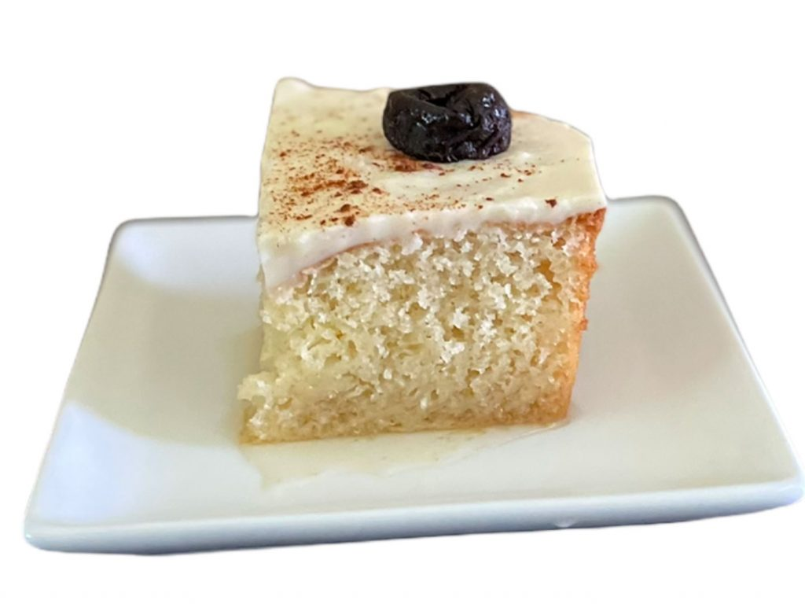

Pio V Nicaragüense
Ingredientes
- 1 1/2 tazas de harina de trigo
- 1 taza de azúcar
- 1/2 taza de mantequilla derretida
- 1/2 taza de leche
- 2 cucharaditas de polvo de hornear
- 1 cucharadita de esencia de vainilla
- 4 huevos
- 1/2 taza de pasas
- 1/2 taza de nueces picadas
Preparación
- En un tazón, mezcla la harina, el azúcar y el polvo de hornear.
- Añade la mantequilla derretida, la leche y la esencia de vainilla a la mezcla y mezcla bien.
- En otro tazón, bate los huevos y luego incorpóralos a la mezcla anterior.
- Agrega las pasas y las nueces picadas a la masa y mezcla hasta que estén bien distribuidas.
- Vierte la masa en un molde previamente engrasado y enharinado.
- Hornea a 180°C (350°F) durante aproximadamente 45 minutos, o hasta que al insertar un palillo en el centro del bizcocho, este salga limpio.
- Deja enfriar antes de desmoldar y servir.